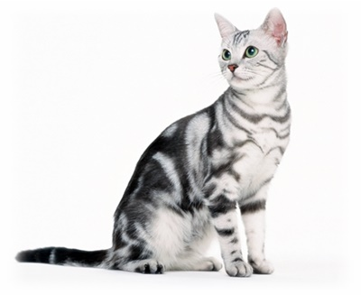
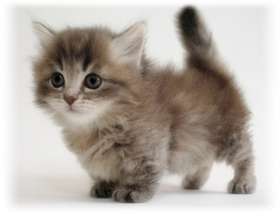
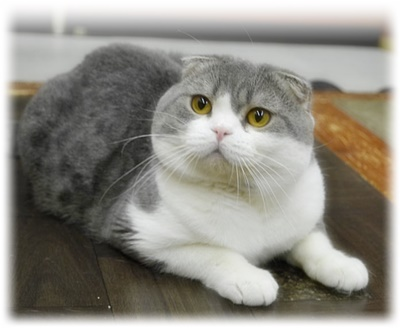
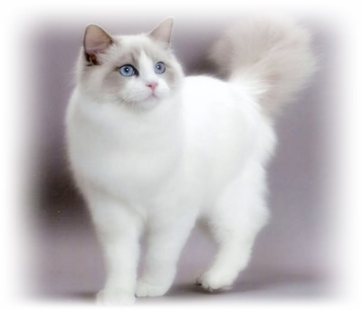
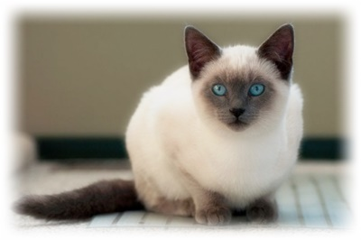
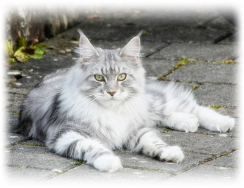

こだわりの猫の写真をお見せします。
Cat Introduction
人気の品種
-
アメリカンショートヘア
-

アメリカを代表する猫種
上品で鮮明なタビーをしていて、無邪気で好奇心旺盛な面と温厚で従順な面を併せ持つ魅力的な猫です。
子供にとっては良い遊び相手になるし、高齢者にとっては落ち着いた従順なペットにもなれます。
適応能力が非常に高いので、生活環境が変わってもストレスを溜めにくいしすぐに慣れます。
-
-
マンチカン
-

短い脚のキュートな姿
短い脚でよちよちと歩くイメージを持たれやすいですが運動能力が高いので動きはけっこう素早いです
そして、可愛いだけでなく意外とカッコいいです。
マンチカンの名前は、オズの魔法使いに登場する小人族の名前での英語読みで「小さい人（munchkin）」に由来しています。
-
-
スコティッシュフォールド
-

特徴は、ペタンと前にたれた愛らしい耳
全体的に丸くてかわいいです。
耳はたれさがっていますが音を聴くことに問題はないです。
-
-
ラグドール
-

毛がふわふわしていて抱き心地が良い
やかでカワイイ性格をしていて「ぬいぐるみ」のような愛らしさがある。
名前の由来も「ぬいぐるみ」から来ています。
淡いコートカラーとブルーの綺麗な瞳も魅力的です。
-
-
シャム
-

サファイアブルーの瞳と美しいポイントカラーに彩られたしなやかなボディが特徴的
別名「サイアミーズ」とも呼ばれています。
シャムというのはタイに以前あった国の名前で、タイを原産国とする歴史の古い猫です。
昔は、貴族や王族といった高貴な家系でないと飼うことが許されていませんでした。
気品と気高さから「純血種の代表」とも言われています。
-
-

米の厳しい寒さに適応した「分厚い被毛」と「かなり大きな体格」
メインクーンはアメリカ最古の品種で名前の由来は「Maine（メイン州）」と「Racoon（アライグマ）」を合わせたものです。
（狩りの仕方がアライグマに似ていることから名づけられました）
たくましくカッコいい印象の猫種です。
ゆっくりと成長して３～５年かけて成熟します。